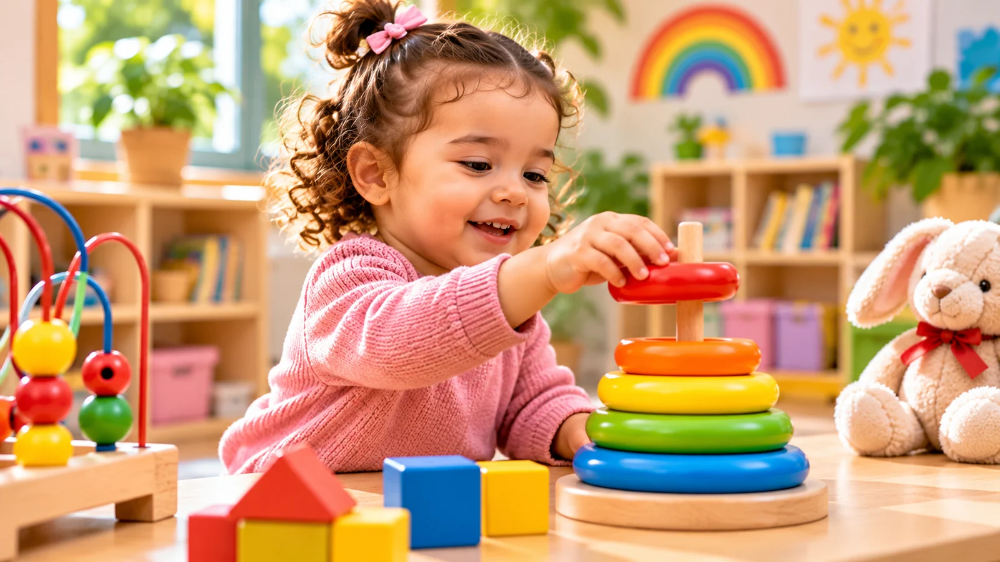

Entre 15 mois et 3 ans, l’enfant connaît de nombreuses évolutions. Il gagne progressivement en mobilité, découvre de nouveaux mots, développe son autonomie et commence à mieux comprendre les relations avec son entourage.
Cette période est marquée par de grandes découvertes, mais aussi par des changements parfois déroutants. Chaque enfant avance à son rythme : les âges indiqués ci-dessous sont des repères, pas des échéances à respecter. Ils s’appuient sur les repères publiés par les Centers for Disease Control and Prevention (CDC), qui décrivent ce que font la plupart des enfants, au moins trois sur quatre, vers un âge donné.
Entre 15 et 18 mois : explorer et découvrir
L’enfant cherche de plus en plus à découvrir son environnement. Il se déplace, manipule les objets et manifeste une curiosité grandissante.
- Bouger : il fait souvent ses premiers pas seul, puis marche avec davantage d’assurance. Vers 18 mois, beaucoup d’enfants marchent sans se tenir et montent sur un canapé ou en descendent sans aide.
- Communiquer : il peut prononcer quelques mots, souvent incomplets, comme « ba » pour « balle ». Il montre du doigt ce qu’il veut ou ce qui l’intéresse, et comprend peu à peu des consignes simples, d’abord accompagnées d’un geste, puis sans geste.
- Relations et émotions : il imite volontiers les autres enfants, manifeste son affection et s’éloigne pour explorer tout en vérifiant que vous restez à proximité.
- Autonomie : il porte certains aliments à sa bouche avec les doigts, peut essayer d’utiliser une cuillère, tend les mains pour qu’on les lui lave et aide parfois à l’habillage en passant le bras dans la manche.
Empiler des cubes, faire rouler une balle ou remplir et vider un récipient sont autant d’activités qui lui permettent d’expérimenter.
Entre 18 mois et 2 ans : affirmer sa personnalité
L’enfant gagne en assurance et manifeste plus clairement ses préférences.
- Bouger : il commence souvent à courir, à taper dans un ballon et à monter quelques marches, avec ou sans aide.
- Communiquer : son vocabulaire s’enrichit. Vers 2 ans, beaucoup d’enfants associent deux mots, comme « encore lait », et montrent une image dans un livre lorsqu’on la leur demande.
- Jouer : il commence à combiner plusieurs jouets, par exemple en posant des aliments de dînette dans une assiette.
- Relations et émotions : il remarque de plus en plus quand quelqu’un est triste ou blessé et observe votre visage pour savoir comment réagir face à une situation nouvelle.
Il souhaite aussi faire certaines choses seul et peut refuser votre aide : « Moi tout seul ! » Cette affirmation de soi fait partie du développement. Elle peut s’accompagner de frustrations et de colères : il sait ce qu’il veut, mais ne possède pas encore toutes les capacités pour l’exprimer ou réguler ses émotions. Notre article sur les colères du jeune enfant propose des pistes pour l’accompagner.
Des repères réguliers, des choix simples et un accompagnement calme l’aident à traverser ces moments.
Entre 2 et 3 ans : développer le langage et l’autonomie
Le vocabulaire s’enrichit et les phrases deviennent progressivement plus élaborées.
- Communiquer : vers 30 mois, de nombreux enfants emploient « je », « moi » ou « nous » et associent plusieurs mots autour d’une action, comme « chien court ». Vers 3 ans, beaucoup posent des questions (« qui ? », « où ? », « pourquoi ? »), échangent quelques répliques dans une conversation et se font comprendre la plupart du temps.
- Jouer et imaginer : il commence à faire semblant avec les objets, par exemple en donnant un cube à « manger » à une poupée, et peut suivre une consigne en deux étapes, comme « Pose le jouet et ferme la porte ».
- Relations : il joue souvent à côté des autres enfants, parfois avec eux, puis rejoint plus volontiers leurs jeux vers 3 ans. Partager et jouer ensemble restent toutefois parfois difficiles.
- Autonomie : beaucoup d’enfants mangent à la cuillère, puis commencent à utiliser une fourchette vers 3 ans. Il peut enlever seul un pantalon ample ou une veste ouverte, apprend peu à peu à enfiler certains vêtements, se lave les mains avec de l’aide et participe au rangement lorsqu’on le lui propose.
- Bouger et manipuler : il apprend à sauter à pieds joints, à dévisser un couvercle, à tourner les pages d’un livre une à une et, vers 3 ans, à enfiler de grosses perles.
Comment accompagner ces évolutions ?
Les expériences du quotidien offrent de nombreuses occasions d’apprendre.
- Lui parler régulièrement, décrire les actions et accompagner le développement du langage au fil des échanges, dans la ou les langues de la famille.
- Lire des histoires et commenter les images.
- Proposer des activités adaptées à son développement moteur : bouger, grimper, manipuler.
- Le laisser essayer certaines tâches à son rythme pour encourager progressivement son autonomie.
- Maintenir des habitudes rassurantes et des règles simples.
- Accueillir ses émotions et mettre des mots sur ce qu’il ressent.
L’essentiel est de proposer un environnement sécurisant et stimulant, sans chercher à précipiter les apprentissages. Le sommeil et les repas évoluent eux aussi pendant cette période : des horaires réguliers aident l’enfant à se repérer. Nos articles sur la routine du coucher et les refus alimentaires donnent des repères pour ces moments du quotidien.
Quand faut-il s’interroger ?
Les repères de développement ne constituent pas un diagnostic. Si une acquisition vous préoccupe, si plusieurs difficultés persistent ou si l’enfant perd une compétence qu’il maîtrisait auparavant, parlez-en à son pédiatre ou à un professionnel de santé. Il n’est pas nécessaire d’attendre : un échange précoce permet souvent d’être rassuré et, si nécessaire, d’envisager un accompagnement adapté.
En conclusion
Entre 15 mois et 3 ans, l’enfant construit progressivement ses premières grandes compétences : marcher, communiquer, jouer, exprimer ses émotions et gagner en autonomie. Certains apprentissages apparaissent rapidement, d’autres demandent du temps et des répétitions.
Chaque petit progrès compte : grandir, c’est avancer pas à pas, avec confiance et bienveillance.
L’équipe de l’École Maternelle Lila, Avec vous, pas à pas.
Sources et ressources
- CDC – Important Milestones: Your Child By Fifteen Months
- CDC – Important Milestones: Your Child By Eighteen Months
- CDC – Important Milestones: Your Child By Two Years
- CDC – Important Milestones: Your Child By Thirty Months
- CDC – Important Milestones: Your Child By Three Years
- GOV.UK – Development Matters (référentiel britannique de la petite enfance)
- OMS – « To grow up healthy, children need to sit less and play more » (2019)